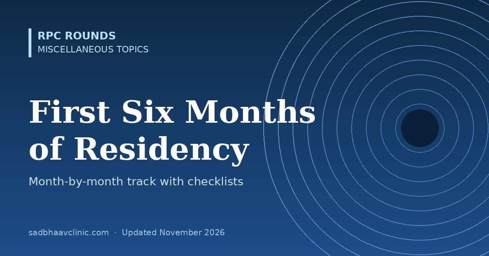

Last updated: November 2026
Key points in 60 seconds
The first six months decide how comfortable you will be for the rest of residency. This track puts the essentials in a sensible order: how to examine, how to refract, which emergencies cannot wait, how the common clinics run, the basics of theatre, and how to read the investigations. Tick each topic when you have read it and practised it; your progress is saved on this device.
Learn one examination routine and use it on every patient.
Refract every day until retinoscopy feels automatic.
Know the conditions that cannot wait, and when to call your senior.
Diabetes, glaucoma and cataract fill most clinics: learn their decisions.
Build hand skills in the wet lab before you need them in theatre.
Read the raw data, not just the colour maps.
Move to the full subspecialty revision checklists, start viva practice in the viva hot seat, and try a timed mock test every month.
Pearls
Common mistakes
Related: Start Here: A New Reader's Guide to RPC Rounds, Day 1 in the Eye OPD: Pocket Checklist for Junior Residents, Revise Ophthalmology: Complete Syllabus Checklist by Subspecialty, Ophthalmic Emergencies on Call: A Resident's Survival Guide, Wet Lab Training for Ophthalmology Residents: Eyes, Set-up and a Skill Ladder.
📘 Want more exam-ready material? See Most Commons in Ophthalmology on Kindle, or browse all my books.
How to cite this page
Patel D. The First Six Months of Ophthalmology Residency: A Month-by-Month Learning Track. RPC Rounds (Sadbhaav Eye Clinic). Updated November 2026. Available at: https://www.sadbhaavclinic.com/first-six-months-ophthalmology-residency.html. Accessed [date].
Looking for an eye specialist in Ahmedabad? Eye Department at Sadbhaav or book a consultation with Dr. Dhaval Patel.